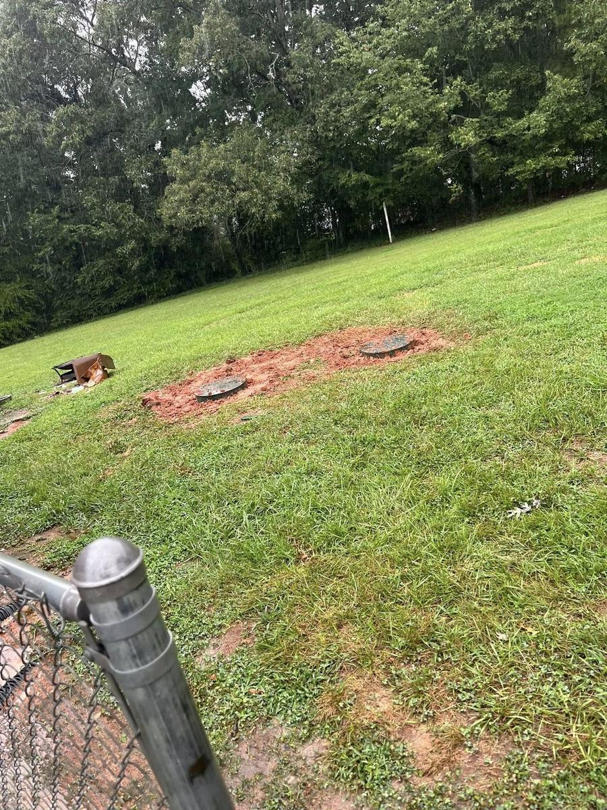

Septic Services We Provide in the Charlotte Area
Where Septic Systems Are Common in the Charlotte Area
Charlotte is a large city and the majority of properties inside the city proper connect to Charlotte Water's public sewer system. However, private septic systems are common in specific parts of the metro — particularly the communities that sit closest to Union County's border.
- Mint Hill. Mint Hill is one of the most septic-dense communities in the Charlotte metro. It retains a largely suburban and semi-rural character with many properties on private well and septic. We serve Mint Hill regularly and it's one of our most frequent Charlotte-area service locations.
- Matthews. While much of central Matthews is on public sewer, properties on the outskirts — particularly along the rural routes bordering Union County — are often on private septic systems.
- Southeast Charlotte (Rea Road, Weddington Road, Providence Road South). Properties along the southeastern corridors heading toward the Union County line frequently have private septic, especially those on larger lots or that predate Charlotte Water's expansion into those areas.
- Steele Creek area (southwest Charlotte). Some properties in the Steele Creek and Lake Wylie corridor are on private septic, particularly older homes on larger lots before the area's more recent development.
Not sure if you're on septic? If you pay a sewer charge on your Charlotte Water bill, you're on public sewer. If there's no sewer line charge, or if you're on a private well, you almost certainly have a septic system. Call us and we can help confirm.
Popular Septic Services in the Charlotte, NC Area
Septic Pumping in the Charlotte, NC Area
Routine septic pumping and tank cleaning for homes, builders, and properties that need reliable maintenance.
Septic Repair in the Charlotte, NC Area
Diagnosis and repair for backups, odors, broken lines, baffle issues, and drain field warning signs.
Septic Inspections in the Charlotte, NC Area
Real estate and maintenance inspections for buyers, sellers, agents, and property owners.
Septic Installation in the Charlotte, NC Area
New septic installation, replacement, and builder support for residential and light commercial projects.
Frequently Asked Questions
Do you serve Mint Hill and Matthews?
Yes. Mint Hill and Matthews are two of our most common Charlotte-area service locations. We're positioned in Monroe (Union County) so the drive to Mint Hill is a short one. Same response times, same crew.
Is septic service in Charlotte more expensive than Union County?
Our pricing is consistent across all our service areas. Pump-out costs are based on tank size and access, not your zip code. Call for a specific quote.
Can you tell me if my Charlotte property is on septic or sewer?
Check your Charlotte Water bill for a separate sewer usage charge. No sewer charge strongly suggests a private system. We can also do a quick site assessment — just call.
Do you handle Mecklenburg County permits for repairs?
Yes. We're familiar with Mecklenburg County Environmental Health's process and handle permit applications and coordination for installations and major repairs in the Charlotte area.